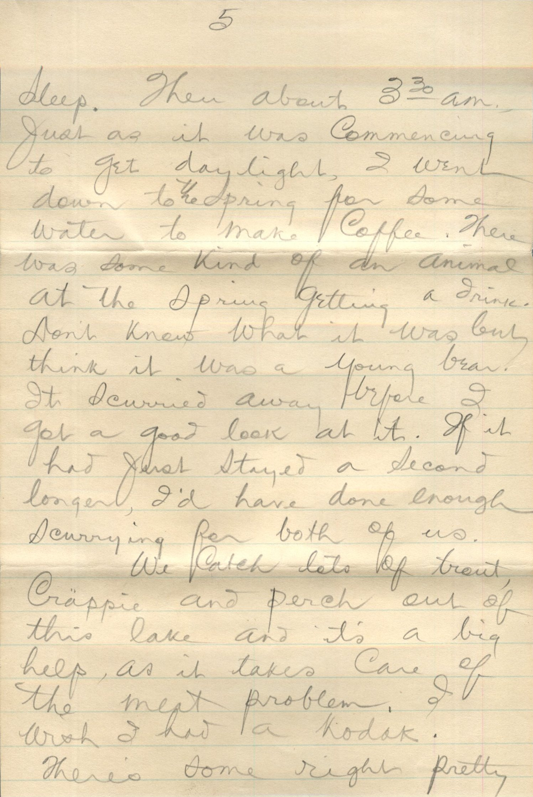
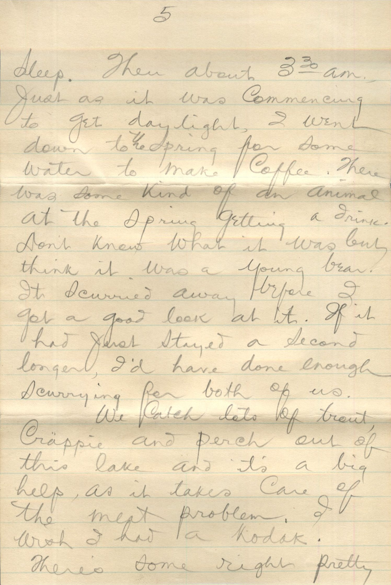

From: Martin W. Chandler, To: John, Bess, and all


 

 From: Martin W. Chandler, To: John, Bess, and All
Mailed From: Sandpoint, Idaho on July 1
From: Martin W. Chandler, To: John, Bess, and All
Mailed From: Sandpoint, Idaho on July 1
Dear John, Bess, and All I've been threatening to write for the past three weeks and guess I'll get it down right now. We had quite a trip up this way. Made good time after leaving Lincoln. Another fellow and myself left the 40 and 8 camp the first of June. There was nothing around Chao in the way of work and we thought we'd come up here and prospect, expecting first to find some kind of job so we could get equipment to go into the hill with but work sure is scarce around this country and there are thousands and thousands of men up this way looking for work. Not exaggerating, there were at least 200 men on every freight train we rode this side of Omaha. Also saw several women riding the box cars. They climb right in with a gang of men in a box car and I guess that's their safest bet. We're camping here on a big lake. Have been for two weeks. Got a little hut of pine boughs and we catch more fish than we can eat. The lake is entirely surrounded by mountains and sure is pretty. Guess we'll stay here until the forest fires break out and then everybody will get a job. They say we can expect the first to start anytime now and the government hires every available man to fight 'em. I hear a person can earn anywhere from $25.00 up to $400.00, depending on duration of fire. The pay is $0.25 per hour, including Chuck, and your time usually runs about 20 hours a day. I'll certainly be glad to earn enough to pay the bills at Carroll and the ambulance and Doctor at Dunlap. It makes me heart sick to think of those bills and I suppose you folks are getting plenty of duns. Just as soon as I can possibly earn some dough I'll shoot it down that way. I thought at first that i'd stay at the 40 and 8 camp and be able to pay $15 a month on my debts but they only allow a man 30 days in camp now because there are so many waiting to get in. We came up through Sheridan, Wyo. Billings and Helena, Mont. and stopped off at Trout Creek, Mont., for couple days to fish. We went into mountains and camped by a dam nice trout stream but nights were too cold and we had no blankets. It was a real pretty place to camp, with a good spring close by and I'm going back there some day and camp a week or two. The first night we were there I got up about 1 am and built a big fire cause twas too cold to sleep. Then about 3:30 am, just as it was commencing to get day light, I went down to the spring for some water to make coffee. There was some kind of an animal at the spring getting a drink. Don't know what it was but think it was a young bear. It scurried away before I got a good look at it. If it had just stayed a second longer, I'd have done enough scurrying for both of us. We catch lots of trout, Crappie, and Perch out of this lake and its a big help, as it takes care of the meat problem, I wish I had a Kodak. There's some right pretty scenery around here. I was out on a log boom fishing other day and fell into lake. No damage done except to my temper. The lake water is as clear as a crystal and about 40 feet deep. Well guess I'll call this a letter and seal it up. I'm feeling great. Haven't been troubled any with my ulcer for past 6 weeks. Hope this finds all of you ok and that you have a good crop of corn. Address me here. Lovingly, Mart
PS. I heard about Margaret Anna's terrible time. I sure felt sorry for her. She must have suffered a lot. Hope she is completely recovered by now. Give them my love and my regards to Doc and Lillian. Bess, I'll send you a nugget soon as I go dig some up. MWC
Had a dandy letter from RK Chandler yesterday. I'm going to frame it.